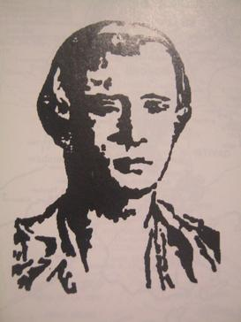

Year 1841Hermano Pule | ||
 |
October Apolinario de la Cruz, better known as Hermano Pule, was a Filipino religious leader born on July 22, 1815. In 1832, he founded the Cofradía de San José (Confraternity of Saint Joseph) in response to the discriminatory practices of the Catholic Church in the Philippines during the Spanish colonial period. At that time, native Filipinos were excluded from joining Catholic religious orders, leading Pule to establish an exclusive order for Filipinos. The cofradía gained significant support, particularly in the provinces of Tayabas, Batangas, and Laguna, growing to a membership of 4,500 to 5,000. Concerned about the potential for rebellion, the Spanish colonial government sent military forces to suppress the movement. On October 23, 1841, Hermano Pule and his followers fought back in defense of their beliefs. However, the Spanish forces sent additional troops. | November November 1, 1841, the cofradía was defeated. Pule was captured, tried, and executed shortly thereafter. Hermano Pule is remembered as a symbol of resistance against colonial oppression and for his efforts to create a religious organization that represented the rights and dignity of native Filipinos. |